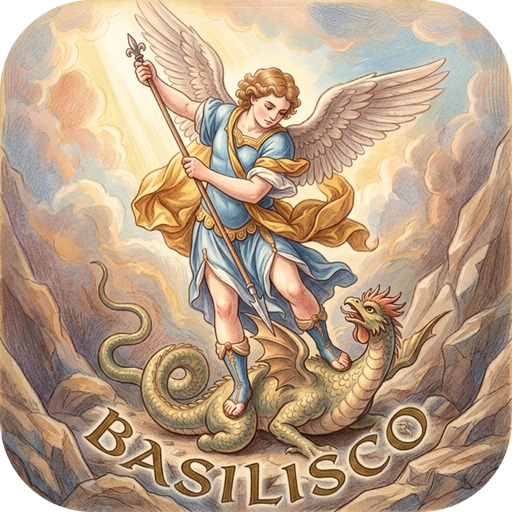

Un carrusel de cajas en 3D
Cajas cuadradas o rectangulares con la franja de cada consola. Gíralas para ver el lomo y la contraportada.

BasiliscoBasilisco reúne tu colección en un carrusel de cajas en 3D: Steam, Epic, GOG, EA, Battle.net, emuladores y cualquier carpeta de tu disco. Es un solo .exe y no hay que instalar nada.
Versión 1.0.0 para Windows
Para Windows 10 y 11 de 64 bits. Es un .zip portable; si lo prefieres, baja el .exe suelto o mira las novedades.
Abres Basilisco y ves toda tu colección de un vistazo, como una estantería. Eliges un juego, se abre su caja y juegas.
Cajas cuadradas o rectangulares con la franja de cada consola. Gíralas para ver el lomo y la contraportada.
Steam (también la familia), Epic Games, GOG, EA, Battle.net, 12 emuladores y cualquier carpeta, con sus carátulas.
Al abrirla, el manual a un lado y el disco o el cartucho al otro. Le das a Jugar, el disco gira y empieza la partida.
Lee el manual como un libro: el PDF original de Games Database, uno hecho con Pinterest o uno creado con la ficha del juego.
Pasa la hoja y escucha la banda sonora, mira las capturas y los tráileres, y también tus capturas y grabaciones de Steam.
Los de Steam y, para el resto, RetroAchievements, RPCS3, PlayStation o los del propio juego, en bronce, plata, oro y platino.
Xbox, PlayStation y Switch Pro, por cable o Bluetooth, con los símbolos de tu mando en cada botón.
Sagas, orden, fondo y color de letras para cada juego, modo nocturno y un modo edición para mover los botones.
Un .exe con su carpeta de datos al lado. Cópialo a un USB o a otro PC y todo sigue igual. Se actualiza solo.
No hay instalador ni hace falta .NET: todo va dentro del .exe.
Baja el .zip y extráelo donde quieras, con Windows, WinRAR o 7-Zip.
Entra en la carpeta Basilisco-v1.0.0 y abre Basilisco.exe.
Pulsa «Importación +» (o la tecla S) para traer tus tiendas, o arrastra tus juegos a la ventana.
basilisco-data, junto al .exe. Si lo mueves, muévela con él..exe no está firmado: pulsa «Más información» y «Ejecutar de todas formas».Basilisco es gratis y de código abierto.